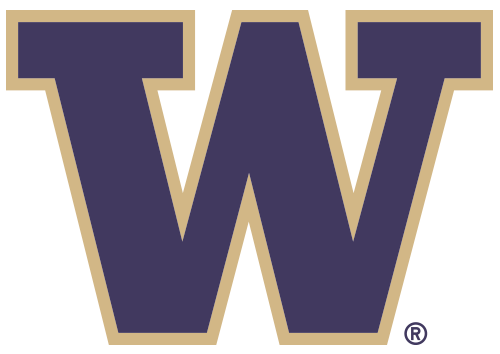
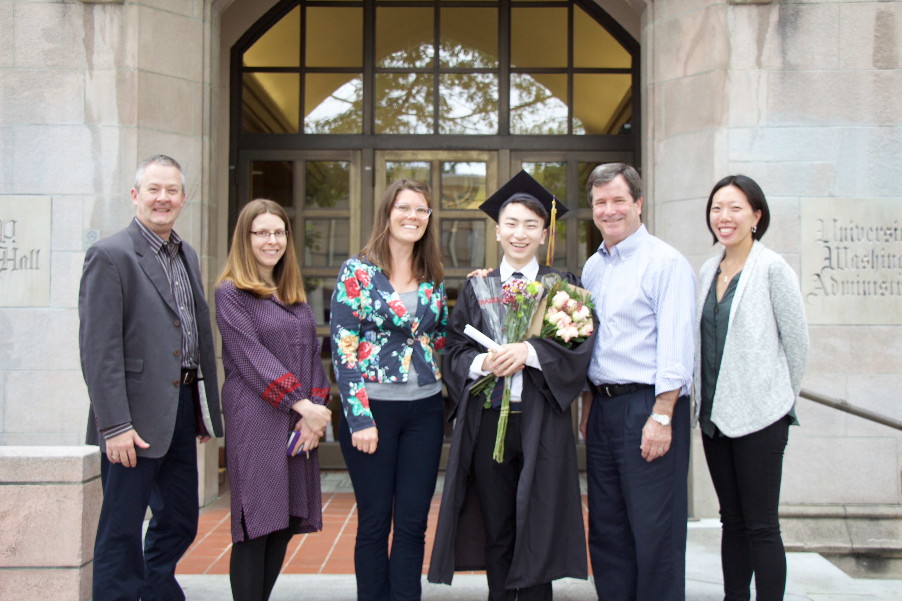
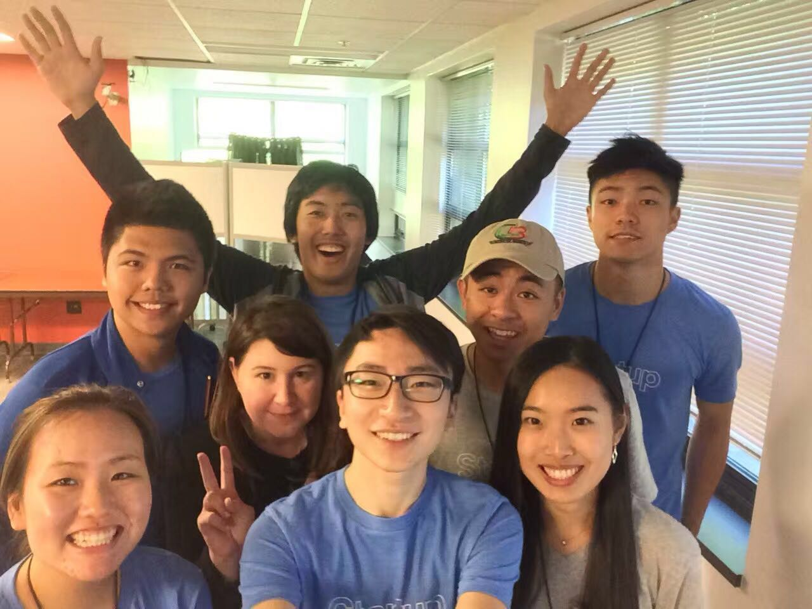

Collin Wang
Master's Candidate, Information Communications Technology
McGill University
Education
Master of Arts, Information Science, McGill University, 2019
- Relevant courses: Database Design & Web Design & Knowledge Management
- Activities: French Group Study
Bachelor of Arts, Communications, University of Washington, 2016
- Relevant courses: Public Speaking & Public Debate & Marketing Strategy
- Activities: UW Public Relations Student Society of America
- GPA 3.70 & Dean's list

Work Experience
UW International Advancement, Seattle, WA, 7/16 – 4/17
Development Assistant
- Arranged logistics for donor visits, corporate visits and fundraising events
- Escorted donors during campus tours and liaised with funders from overseas
- Assisted with donor correspondence and communications
Washington States China Council, Seattle, WA, 1/16 – 7/16
Marketing Assistant
- Event planning, marketing and support for international industry events
- Wrote online and social media communications for official channels
- Liaised with member companies to execute promotional events and campaigns
UW Office of the Provost, Seattle, WA, 1/15 – 1/16
Communications Assistant
- Used metrics to measure engagement to improve audience development
- Audited contracted PR company to measure social media impact
- Advised UW marketing on presenting brand tenets to audiences

With OGA Team
Portfolio
- Worked in a group of three creatives charged with developing a website to promote a series of events in Shanghai, including first Pac-12 regular season basketball game played in China.
- Provided voiceover for UW in Shanghai "Boundless" video, which was played at a global sporting event at the Mercedes-Benz Arena in Shanghai.

With UW Ambassadors